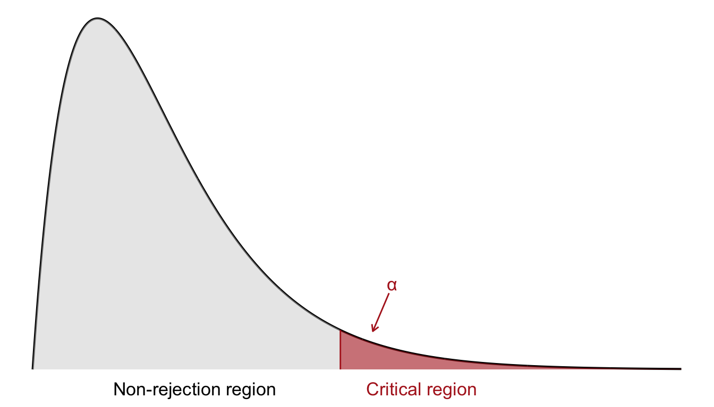
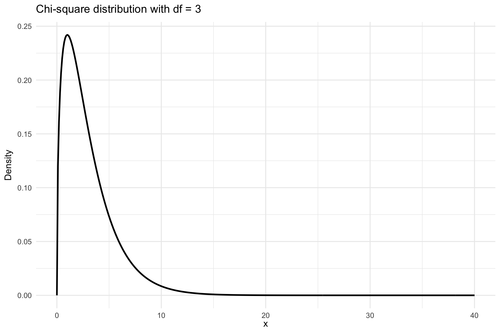

23 Chi Square Tests
So far, we have focused primarily on inferential statistical methods for quantitative variables measured on interval or ratio scales, as well as binary qualitative (0-1) variables. However, in many real-world applications, we also encounter categorical variables with more than two categories (e.g., eye color, political party, type of transportation). For such qualitative variables, we need specialized methods to draw valid statistical conclusions.
This is where the Chi-Square method (\(\chi^2\)) becomes useful. The chi-square (pronounced “kai-square”) test is a non-parametric method used for hypothesis testing involving categorical data. It is particularly valuable when we are interested in understanding:
- Whether the observed distribution of a categorical variable matches an expected distribution (goodness-of-fit test)
- Whether there is a statistically significant association between two categorical variables (test of independence in a contingency table)
These tests rely on comparing observed frequencies with expected frequencies, and the test statistic follows a Chi-Square distribution under the null hypothesis. Each of these tests has its assumptions and limitations, but both are foundational tools in categorical data analysis.
23.1 The Chi-Square (\(\chi^2\)) Distribution
The chi-square (\(\chi^2\)) distribution is a probability distribution that frequently arises in statistical inference, particularly when working with categorical data. It describes a population where values are strictly non-negative. This is due to the fact that test statistics in \(\chi^2\) tests are constructed from squared deviations between observed and expected values, and squaring ensures all contributions are positive. As a result, the \(\chi^2\) distribution is bounded below by zero and only takes positive values.
In contrast to tests based on the \(z\)- or \(t\)-distributions, which often consider both tails, the \(\chi^2\) test is typically one-sided. Since we are only concerned with whether the observed data deviate substantially from the expected frequencies under the null hypothesis, we reject the null hypothesis only for large values of the test statistic. Therefore, the critical region lies in the right-hand tail of the \(\chi^2\) distribution, as shown in Figure 23.1.
To determine the critical region, we specify a significance level \(\alpha\). The critical value is then defined such that the probability of observing a test statistic greater than this threshold (under \(H_0\)) is exactly \(\alpha\). If the observed \(\chi^2\) value exceeds this critical value, we reject the null hypothesis. As before, we determine the critical values by consulting a chi-square distribution table in Appendix C.
The shape of the \(\chi^2\) distribution depends on its degrees of freedom. For a small number of degrees of freedom, the distribution is heavily right-skewed. As the degrees of freedom increase, it becomes more symmetric and resembles the normal distribution. This makes the \(\chi^2\) distribution well suited for large-sample approximations. This is visualized in Figure 23.2. In the following, we will apply the \(\chi^2\) distribution to two main tests:
- The goodness-of-fit test, which assesses whether observed data match a theoretical distribution.
- The test for independence, which evaluates the association between two categorical variables in contingency tables.

23.2 Goodness-of-Fit Test
In this section, we address how to test whether a categorical distribution fits a specified probability distribution. We have \(n\) observations categorized into \(K\) distinct categories:
| Category | Observed Count |
|---|---|
| 1 | \(O_1\) |
| 2 | \(O_2\) |
| 3 | \(O_3\) |
| \(\vdots\) | \(\vdots\) |
| \(K\) | \(O_K\) |
Each \(O_i\) represents the number of observations in category \(i\), for \(i = 1, 2, \dots, K\).
We let \(P_i\) denote the theoretical probability of an observation falling into category \(i\), where the sum of all category probabilities must satisfy:
\[ \sum_{i=1}^{K} P_i = 1 \]
We want to test whether the actual observed distribution matches a known or hypothesized distribution with fixed probabilities \(P^*_1, P^*_2, \dots, P^*_K\).
-
Null Hypothesis (\(H_0\)): The data follow the expected probabilities
\(H_0: P_1 = P^*_1,\ P_2 = P^*_2,\ \dots,\ P_K = P^*_K\)
-
Alternative Hypothesis (\(H_1\)): The data do not follow the expected probabilities.
\(H_0:\) at least one of the \(P_i\) differs from \(P^*_i\).
If the null hypothesis is true, we expect the number of observations in each category to be: \[ E_i = n \cdot P^*_i \]
This leads to the following extended table:
| Category | Observed Count \(O_i\) | Probability \(P^*_i\) | Expected Count \(E_i = n \cdot P^*_i\) |
|---|---|---|---|
| 1 | \(O_1\) | \(P^*_1\) | \(E_1\) |
| 2 | \(O_2\) | \(P^*_2\) | \(E_2\) |
| 3 | \(O_3\) | \(P^*_3\) | \(E_3\) |
| \(\vdots\) | \(\vdots\) | \(\vdots\) | \(\vdots\) |
| \(K\) | \(O_K\) | \(P^*_K\) | \(E_K\) |
| Total | \(n\) | \(1\) | \(n\) |
We use the chi-square test statistic defined by: \[ \chi^2 = \sum_{i=1}^{K} \frac{(O_i - E_i)^2}{E_i} \] where:
- \(O_i\) is the observed frequency for category \(i\)
- \(E_i\) is the expected frequency for category \(i\) under \(H_0\)
This test statistic follows approximately a chi-square distribution with \((K - 1)\) degrees of freedom, assuming that all expected counts \(E_i\) are sufficiently large (usually at least 5).
A large value of \(\chi^2\) indicates a large discrepancy between observed and expected counts, which provides evidence against the null hypothesis. We compare the test statistic to a critical value from the \(\chi^2\) distribution table or compute a \(p\)-value.
If the \(p\)-value is less than the significance level (e.g., 0.05), we reject \(H_0\) and conclude that the observed distribution does not fit the expected distribution.
Example 23.1: Chi-square Goodness-of-Fit Test for Color Preference
Let’s conduct a chi-square goodness-of-fit test to examine whether a product is equally preferred in four different colors. We ask 80 randomly selected potential customers about their preferred color, and the responses are summarized as follows:
| Color | Observed Count (\(O_i\)) |
|---|---|
| 1 | 12 |
| 2 | 40 |
| 3 | 8 |
| 4 | 20 |
| Total | 80 |
Step 1: Hypotheses
We want to test if all colors are equally preferred.
\(H_0\): The colors are equally preferred, i.e., \(P_1 = P_2 = P_3 = P_4 = 0.25\)
\(H_1\): Not all colors are equally preferred.
Step 2: Significance Level
We choose a significance level of
\[\alpha = 0.05\]
Step 3: Test Statistic
We use the chi-square test statistic:
\[ \chi^2 = \sum_{i=1}^{k} \frac{(O_i - E_i)^2}{E_i} \] where:
-
\(O_i\) = observed frequency
-
\(E_i\) = expected frequency under \(H_0\)
- \(k = 4\) categories
Degrees of freedom:
\[
\text{df} = k - 1 = 3
\]
Step 4: Decision Rule
From the chi-square distribution table (Appendix C), the critical value at
\[ \chi^2_{3, 0.05} = 7.815 \]
Reject \(H_0\) if:
\[ \chi^2_{\text{obs}} > 7.815 \]
Step 5: Observation
We compute the expected frequency for each category:
\[ E_i = n \cdot P_i = 80 \cdot 0.25 = 20 \]
| Color | \(O_i\) | \(E_i\) | \((O_i - E_i)^2 / E_i\) |
|---|---|---|---|
| 1 | 12 | 20 | 3.20 |
| 2 | 40 | 20 | 20.00 |
| 3 | 8 | 20 | 7.20 |
| 4 | 20 | 20 | 0.00 |
| Total | 30.40 |
Now we can compute the test statistic:
\[
\chi^2_{\text{obs}} = 3.20 + 20.00 + 7.20 + 0.00 = 30.40
\]
Step 6: Conclusion
Since
\[
\chi^2_{\text{obs}} = 30.40 > 7.815 = \chi^2_{3, 0.05}
\] We reject the null hypothesis at the 5% significance level. There is a statistically significant difference in color preferences among consumers.
Example 23.2: Chi-square Goodness-of-Fit
We want to test whether the market shares of three competing products (A, B, and C) have changed after a recent modification to product C.
Step 1: Hypotheses
We assume that the historical market shares were:
- Product A: 30%
- Product B: 50%
- Product C: 20%
We test:
\(H_0: p_A = 0.30,\quad p_B = 0.50,\quad p_C = 0.20\)
\(H_1:\) The proportions are not equal to those specified under \(H_0\)
Step 2: Significance level
We use a significance level of:
\[ \alpha = 0.05 \]
Step 3: Test statistic
We use the chi-square goodness-of-fit test statistic: \[
\chi^2 = \sum_{i=1}^k \frac{(O_i - E_i)^2}{E_i}
\] Degrees of freedom: \[
df = k - 1 = 3 - 1 = 2
\]
Step 4: Decision rule
We reject the null hypothesis if: \[
\chi^2_{\text{obs}} > \chi^2_{2, 0.05} = 5.991
\]
Step 5: Observation
From a survey of 200 customers:
| Product | Observed (\(O_i\)) | Expected proportion (\(p^*_i\)) | Expected count (\(E_i = 200 \cdot p^*_i\)) |
|---|---|---|---|
| A | 48 | 0.30 | 60 |
| B | 98 | 0.50 | 100 |
| C | 54 | 0.20 | 40 |
Now compute the observed value of the test statistic: \[ \chi^2_{\text{obs}} = \frac{(48 - 60)^2}{60} + \frac{(98 - 100)^2}{100} + \frac{(54 - 40)^2}{40} = 7.34 \]
Step 6: Conclusion
Since: \[
\chi^2_{\text{obs}} = 7.34 > \chi^2_{2, 0.05} = 5.991,
\] we reject the null hypothesis at the 5% significance level. There is sufficient evidence to suggest that the market shares for products A, B, and C have changed.
23.3 Testing for Independence in Contingency Tables
We now consider the second \(\chi^2\) method, namely the test of independence in a contingency table.
When investigating the relationship between two qualitative (categorical) variables, a common method is the chi-square test of independence. This method allows us to determine whether there is a significant association between the two variables in the population, based on data observed in a sample.
Example 23.3: Income Level and Housing Cost
A sample of 500 single-person households is classified based on their disposable income (low, medium, high) and their housing costs (low, medium, high). The data is presented in a contingency table:
| Housing Cost | Low Income | Medium Income | High Income | Total |
|---|---|---|---|---|
| Low | 35 | 50 | 15 | 100 |
| Medium | 50 | 120 | 30 | 200 |
| High | 15 | 80 | 105 | 200 |
| Total | 100 | 250 | 150 | 500 |
We want to test whether there is a relationship between income level and housing cost.
Our hypotheses are as follows:
- Null hypothesis: The variables are independent; there is no association between income and housing cost.
- Alternative hypothesis: The variables are not independent; there is an association between income and housing cost.
To explore this further, we can examine the relative percentages across income categories:
| Housing Cost | Low Income | Medium Income | High Income | Total |
|---|---|---|---|---|
| Low | 35% | 20% | 10% | 20% |
| Medium | 50% | 48% | 20% | 40% |
| High | 15% | 32% | 70% | 40% |
| Total | 100% | 100% | 100% | 100% |
From this, we can see that the distributions vary across income levels, suggesting dependence.
So what would independence look like?
Under complete independence, the same distribution of housing costs would occur across all income groups. Based on the total column proportions, expected percentages would be:
| Housing Cost | Expected % | Low Income | Medium Income | High Income |
|---|---|---|---|---|
| Low | 20% | 20% | 20% | 20% |
| Medium | 40% | 40% | 40% | 40% |
| High | 40% | 40% | 40% | 40% |
Using expected proportions, the expected counts under \(H_0\) are:
| Housing Cost | Low Income | Medium Income | High Income | Total |
|---|---|---|---|---|
| Low | 20 | 50 | 30 | 100 |
| Medium | 40 | 100 | 60 | 200 |
| High | 40 | 100 | 60 | 200 |
| Total | 100 | 250 | 150 | 500 |
These represent what we would expect to observe if there were no relationship between income and housing costs.
Let’s generalize this test for examining independence between any pair of categorical variables.
The observed data is arranged in a two-way contingency table with \(r\) rows and \(c\) columns, summarizing the joint distribution of two categorical variables:
| 1 | 2 | \(\cdots\) | \(c\) | Total | |
|---|---|---|---|---|---|
| 1 | \(O_{11}\) | \(O_{12}\) | \(\cdots\) | \(O_{1c}\) | \(R_1\) |
| 2 | \(O_{21}\) | \(O_{22}\) | \(\cdots\) | \(O_{2c}\) | \(R_2\) |
| \(\vdots\) | \(\vdots\) | \(\vdots\) | \(\ddots\) | \(\vdots\) | \(\vdots\) |
| \(r\) | \(O_{r1}\) | \(O_{r2}\) | \(\cdots\) | \(O_{rc}\) | \(R_r\) |
| Total | \(C_1\) | \(C_2\) | \(\cdots\) | \(C_c\) | \(n\) |
Here, \(O_{ij}\) denotes the observed frequency in row \(i\), column \(j\), while \(R_i\) and \(C_j\) are the row and column totals respectively, and \(n\) is the grand total.
We want to test: \[ \begin{align*} H_0 &: \text{The two classification variables are independent} \\ H_1 &: \text{The two classification variables are not independent} \end{align*} \]
We use the chi-square test statistic defined as: \[ \chi^2 = \sum_{i=1}^{r} \sum_{j=1}^{c} \frac{(O_{ij} - E_{ij})^2}{E_{ij}} \] where \(E_{ij}\) is the expected frequency under the assumption of independence:
\[ E_{ij} = \frac{R_i \cdot C_j}{n} \]
That is, the expected count in each cell is the product of its row and column totals divided by the grand total. Expected frequencies (\(E_{ij}\)) computed this way ensure that:
- The relative distribution within each column is the same as the marginal distribution across rows (on the right).
- The relative distribution within each row is the same as the marginal distribution across columns (at the bottom).
This matches what we would expect under independence between the variables.
If \(H_0\) is true and the sample is large enough, then the test statistic \(\chi^2\) approximately follows a chi-square distribution with \((r - 1)(c - 1)\) degrees of freedom.
We reject the null hypothesis if the test statistic \(\chi^2\) is greater than the critical value, determined from the chi-square distribution table (Appendix C), based on:
- The chosen significance level \(\alpha\)
- The degrees of freedom: \((r - 1)(c - 1)\)
Note: Rule of Thumb for the Chi-Square Test
The chi-square test for independence is a widely used method to assess whether two categorical variables are statistically independent by comparing observed frequencies to expected frequencies under the assumption of independence. It is crucial to ensure expected cell counts are sufficiently large to rely on the chi-square approximation.
To ensure the approximation is valid, a common guideline is:
- At least 80% of the expected cell counts \(E_{ij}\) should be 5 or greater.
- If this condition is not met, consider combining categories to increase expected counts.
Example 23.3: Income Level and Housing Cost (Cont’d)
We are given a \(3 \times 3\) contingency table of education level and income level among 500 individuals. The goal is to determine whether education level and income level are statistically independent.
| Education Level | Low Income | Medium Income | High Income | Row Totals (\(R_i\)) |
|---|---|---|---|---|
| Low | 35 | 50 | 15 | 100 |
| Medium | 50 | 120 | 30 | 200 |
| High | 15 | 80 | 105 | 200 |
| Column Totals (\(C_j\)) | 100 | 250 | 150 | \(n = 500\) |
Step 1: Hypotheses
- \(H_0\): There is no association between education and income level. The two variables are independent.
- \(H_1\): There is an association between education and income level. The two variables are not independent.
Step 2: Significance Level
We choose a significance level of \(\alpha = 0.05\).
Step 3: Test Statistic
We will use the chi-square test statistic: \[
\chi^2 = \sum_{i=1}^r \sum_{j=1}^c \frac{(O_{ij} - E_{ij})^2}{E_{ij}}
\]
where:
- \(O_{ij}\) = observed count in cell \((i,j)\)
- \(E_{ij}\) = expected count in cell \((i,j)\) which under \(H_0\), computed as: \[ E_{ij} = \frac{R_i \cdot C_j}{n} \]
Example: for cell (1,1): \[ E_{11} = \frac{100 \cdot 100}{500} = 20 \]
The expected values are shown in parentheses in the table below:
| Education Level | Low Income | Medium Income | High Income | Total |
|---|---|---|---|---|
| Low | 35 (20) | 50 (50) | 15 (30) | 100 |
| Medium | 50 (40) | 120 (100) | 30 (60) | 200 |
| High | 15 (40) | 80 (100) | 105 (60) | 200 |
| Total | 100 | 250 | 150 | 500 |
Step 4: Decision rule
Degrees of freedom: \[
df = (r - 1)(c - 1) = (3 - 1)(3 - 1) = 4
\]
Using the chi-square table (Appendix C) we find: \[ \chi^2_{0.05, 4} = 9.488 \]
We thus reject the null if our observed value is greater than 9.488.
Step 5: Observation
Using the formula: \[
\chi^2_{\text{obs}} = \frac{(35 - 20)^2}{20} + \frac{(50 - 50)^2}{50} + \dots + \frac{(105 - 60)^2}{60} = 93.63
\]
Step 6: Conclusion
Compare the test statistic with the critical value:
- \(\chi^2_{\text{obs}} = 93.63\)
- \(\chi^2_{\text{crit}} = 9.488\)
Since \(93.63 > 9.488\), we reject the null hypothesis at the 5% significance level. There is strong evidence to suggest that education level and income level are not independent; there appears to be a significant association between them.
Exercises
- A factory produces light bulbs that are supposed to have three brightness levels in the following proportions:
Low: 20%
Medium: 50%
-
High: 30%
In a random sample of 200 light bulbs, the observed distribution is:
Low: 38
Medium: 92
-
High: 70
Test whether the observed distribution fits the expected proportions at the 5% significance level.
Solution
Step 1: Hypotheses
- \(H_0\): The population distribution follows the claimed proportions (20%, 50%, 30%).
- \(H_1\): The distribution does not follow these proportions.
Step 2: Significance level
- Use \(\alpha = 0.05\)
Step 3: Test statistic
We use the chi-square goodness-of-fit test statistic: \[
\chi^2 = \sum_{i=1}^k \frac{(O_i - E_i)^2}{E_i}
\]
Step 4: Observation
Total sample size: \(n = 200\)
Claimed proportions:
- Low: \(p_1 = 0.20\)
- Medium: \(p_2 = 0.50\)
- High: \(p_3 = 0.30\)
Expected counts:
\[ \begin{split} & E_1 = 200 \times 0.20 = 40 \\ & E_2 = 200 \times 0.50 = 100 \\ & E_3 = 200 \times 0.30 = 60 \end{split} \]
Expected frequencies:
| Category | Observed (\(O_i\)) | Expected (\(E_i\)) |
|---|---|---|
| Low | 38 | 40 |
| Medium | 92 | 100 |
| High | 70 | 60 |
Step 4: Decision rule
Degrees of freedom: \(k - 1 = 3 - 1 = 2\)
Critical value: \(\chi^2_{0.95, 2} = 5.991\)
Reject \(H_0\) if observed value > 5.991.
Step 5: Observation
Our observed value is given by: \[
\chi^2 = \sum \frac{(O_i - E_i)^2}{E_i}
\]
\[ \chi^2 = \frac{(38 - 40)^2}{40} + \frac{(92 - 100)^2}{100} + \frac{(70 - 60)^2}{60} \\ = \frac{4}{40} + \frac{64}{100} + \frac{100}{60} \\ = 0.10 + 0.64 + 1.67 = 2.41 \]
Step 6: Conclusion
Since \(2.41 < 5.991\), we fail to reject \(H_0\). There is no significant difference between the observed and expected brightness levels. The data is consistent with the claimed distribution at the 5% level.
- A political analyst wants to examine whether voting preference is independent of age group. A random sample of 300 voters was surveyed, and the results were summarized in the following contingency table:
| Candidate A | Candidate B | Candidate C | Total | |
|---|---|---|---|---|
| 18–29 years | 28 | 45 | 27 | 100 |
| 30–49 years | 36 | 33 | 31 | 100 |
| 50+ years | 26 | 30 | 44 | 100 |
| Total | 90 | 108 | 102 | 300 |
Is there evidence at the 5% significance level that voting preference is dependent on age group?
Solution
Step 1: Hypotheses
- \(H_0\): Voting preference is independent of age group.
- \(H_1\): Voting preference is dependent on age group.
Step 2: Significance level
Set \(\alpha = 0.05\)
Step 3: Test statistic
\[
\chi^2 = \sum_{i=1}^r \sum_{j=1}^c \frac{(O_{ij} - E_{ij})^2}{E_{ij}}
\]
where:
- \(O_{ij}\) = observed count in cell \((i,j)\)
- \(E_{ij}\) = expected count in cell \((i,j)\) which under \(H_0\), computed as: \[ E_{ij} = \frac{R_i \cdot C_j}{n} \]
Step 4: Decision rule
Degrees of freedom: df = \((3-1)(3-1) = 4\)
Critical value: \(\chi^2_{0.95, 4} = 9.488\)
Reject \(H_0\) if observed value > \(9.488\).
Step 5: Observation
We use the formula for expected cell counts: \[
E_{ij} = \frac{(\text{Row total}) \times (\text{Column total})}{\text{Grand total}}
\]
Given Table (Observed Counts):
| Candidate A | Candidate B | Candidate C | Row Total | |
|---|---|---|---|---|
| 18–29 years | 28 | 45 | 27 | 100 |
| 30–49 years | 36 | 33 | 31 | 100 |
| 50+ years | 26 | 30 | 44 | 100 |
| Column Total | 90 | 108 | 102 | 300 |
Expected values:
Row 1: Age 18–29 (Row Total = 100)
- Candidate A:
\[E_{11} = \frac{100 \times 90}{300} = 30\]
- Candidate B:
\[E_{12} = \frac{100 \times 108}{300} = 36\]
- Candidate C:
\[E_{13} = \frac{100 \times 102}{300} = 34\]
Row 2: Age 30–49 (Row Total = 100)
- Candidate A:
\[E_{21} = \frac{100 \times 90}{300} = 30\]
- Candidate B:
\[E_{22} = \frac{100 \times 108}{300} = 36\]
- Candidate C:
\[E_{23} = \frac{100 \times 102}{300} = 34\]
Row 3: Age 50+ (Row Total = 100)
- Candidate A:
\[E_{31} = \frac{100 \times 90}{300} = 30\]
- Candidate B:
\[E_{32} = \frac{100 \times 108}{300} = 36\]
- Candidate C:
\[E_{33} = \frac{100 \times 102}{300} = 34\]
Table over Observed vs (Expected Counts):
| Age Group | Candidate A | Candidate B | Candidate C |
|---|---|---|---|
| 18–29 | O = 28 (E = 30) | O = 45 (E = 36) | O = 27 (E = 34) |
| 30–49 | O = 36 (E = 30) | O = 33 (E = 36) | O = 31 (E = 34) |
| 50+ | O = 26 (E = 30) | O = 30 (E = 36) | O = 44 (E = 34) |
18–29 years:
- Candidate A:
\[\frac{(28 - 30)^2}{30} = \frac{4}{30} = 0.133\] - Candidate B:
\[\frac{(45 - 36)^2}{36} = \frac{81}{36} = 2.25\] - Candidate C:
\[\frac{(27 - 34)^2}{34} = \frac{49}{34} ≈ 1.441\]
30–49 years:
- Candidate A:
\[\frac{(36 - 30)^2}{30} = \frac{36}{30} = 1.2\] - Candidate B:
\[\frac{(33 - 36)^2}{36} = \frac{9}{36} = 0.25\] - Candidate C:
\[\frac{(31 - 34)^2}{34} = \frac{9}{34} ≈ 0.265\]
50+ years:
- Candidate A:
\[\frac{(26 - 30)^2}{30} = \frac{16}{30} ≈ 0.533\] - Candidate B:
\[\frac{(30 - 36)^2}{36} = \frac{36}{36} = 1.0\] - Candidate C:
\[\frac{(44 - 34)^2}{34} = \frac{100}{34} ≈ 2.941\] Add all components: \[ \chi^2 ≈ 0.133 + 2.25 + 1.441 + 1.2 + 0.25 + 0.265 + 0.533 + 1.0 + 2.941 ≈ 10.013 \]
Step 6: Conclusion
Since \(10.013 > 9.488\), we reject the null hypothesis. There is evidence that voting preference depends on age group.
- Suppose a state lottery randomly draws one number from the integers 1 through 5 each week. Over 100 weeks, the frequency of each number is recorded. Test whether these numbers are drawn uniformly, i.e., whether each number has an equal chance of being drawn.
Solution
Step 1: Hypotheses
\(H_0\): The numbers are uniformly distributed (random).
\(H_1\): The numbers are not uniformly distributed.
Step 2: Significance Level
Let \(\alpha = 0.05\)
Step 3: Decision Rule
Degrees of freedom = \(k - 1 = 5 - 1 = 4\)
From table; \(\chi^2_{0.05, 4} = 9.488\) which we reject if our observed value is greater than.
Step 4: Test Statistic
The Chi-square statistic is:
\[ \chi^2 = \sum \frac{(O_i - E_i)^2}{E_i} \]
Step 5: Observation
If the distribution is uniform, each number is expected to occur:
\[ E = \frac{100}{5} = 20 \text{ times} \]
So, expected counts for all five categories = 20.
Calculating: \[ \begin{aligned} \chi^2 &= \frac{(15 - 20)^2}{20} + \frac{(24 - 20)^2}{20} + \frac{(19 - 20)^2}{20} + \frac{(22 - 20)^2}{20} + \frac{(20 - 20)^2}{20} \\ &= \frac{25}{20} + \frac{16}{20} + \frac{1}{20} + \frac{4}{20} + \frac{0}{20} \\ &= 1.25 + 0.8 + 0.05 + 0.2 + 0 \\ &= 2.3 \end{aligned} \]
Step 6: Conclusion
Since \(2.3 < 9.488\), we fail to reject \(H_0\). There is no evidence to suggest the lottery numbers are not drawn uniformly. The observed differences could be due to chance.